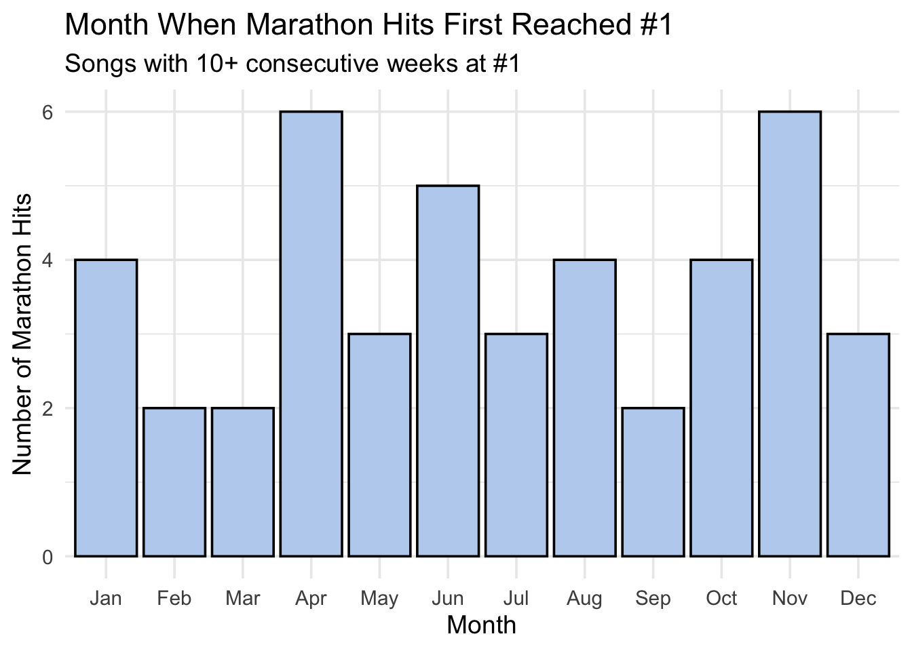
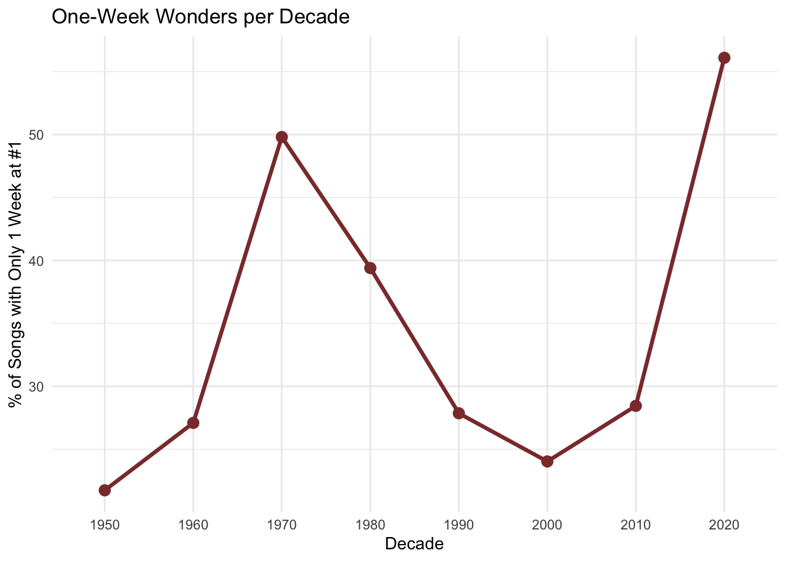
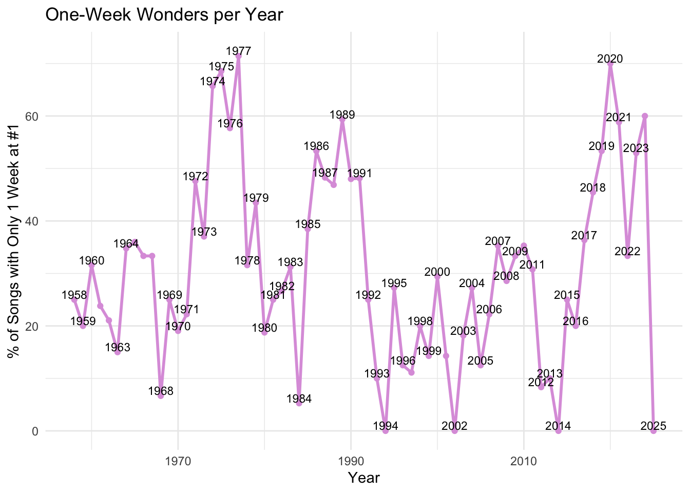
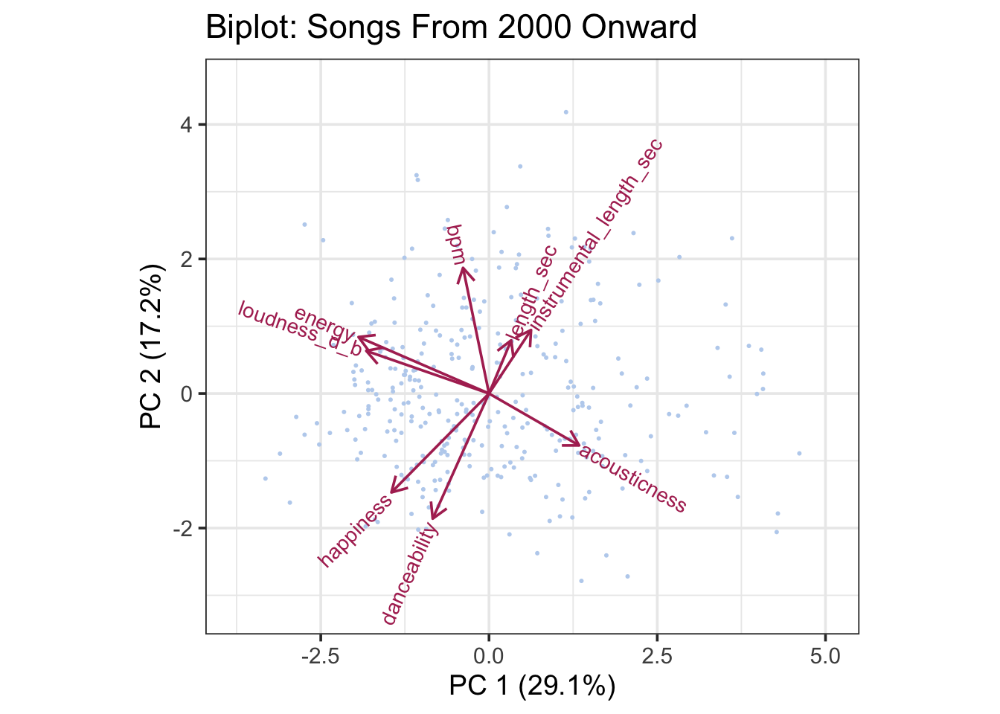
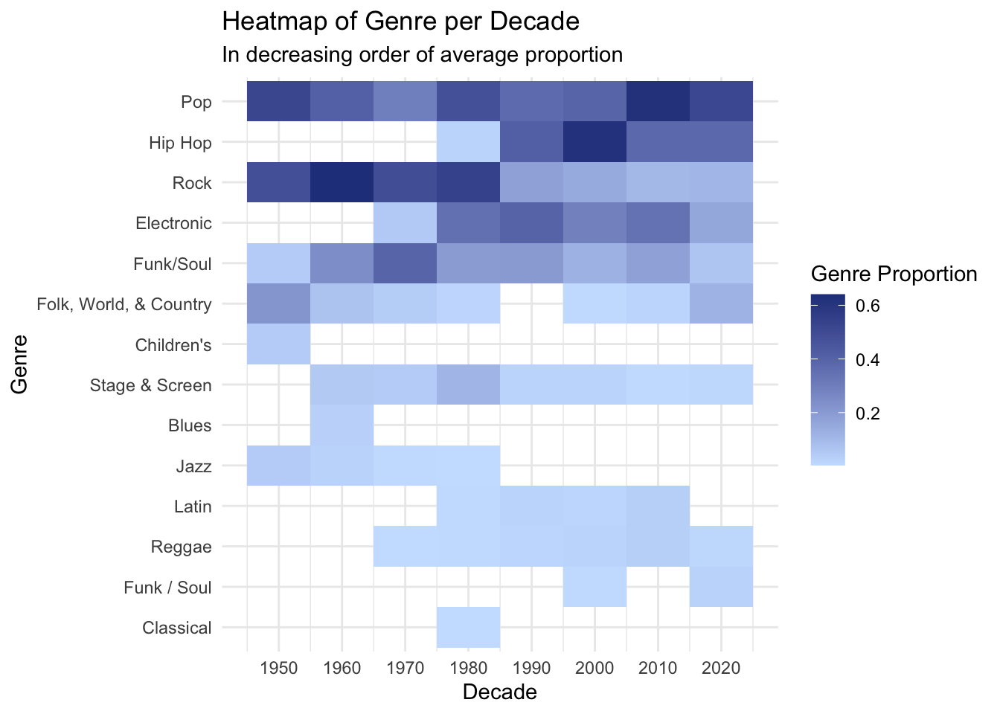
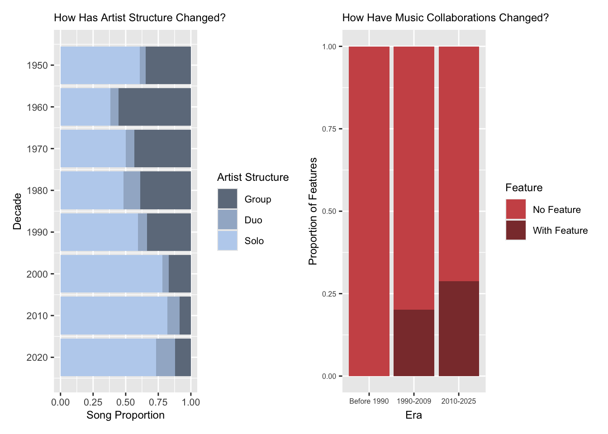
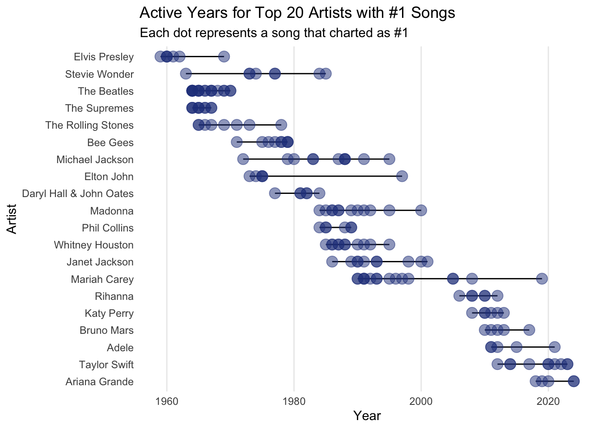

3The Billboard Hot 100 #1 Songs: What the Top Tells Us About the Evolution of Music
Code
library(tidyverse)
── Attaching core tidyverse packages ──────────────────────── tidyverse 2.0.0 ──
✔ dplyr 1.1.4 ✔ readr 2.1.5
✔ forcats 1.0.1 ✔ stringr 1.5.2
✔ ggplot2 4.0.0 ✔ tibble 3.3.0
✔ lubridate 1.9.4 ✔ tidyr 1.3.1
✔ purrr 1.1.0
── Conflicts ────────────────────────────────────────── tidyverse_conflicts() ──
✖ dplyr::filter() masks stats::filter()
✖ dplyr::lag() masks stats::lag()
ℹ Use the conflicted package (<http://conflicted.r-lib.org/>) to force all conflicts to become errors
Code
library(lubridate)library(scales)
Attaching package: 'scales'
The following object is masked from 'package:purrr':
discard
The following object is masked from 'package:readr':
col_factor
Attaching package: 'ggmosaic'
The following objects are masked from 'package:vcd':
mosaic, spine
The following object is masked from 'package:GGally':
happy
Have you ever listened to a song so good you just had to play it over and over again… for weeks? Here, we ask ourselves what that might look like in the Billboard Hot 100. Since the list is updated weekly, it is totally possible for a song to show up across multiple weeks in the span of a year. The question is: how often does that occur every decade?
3.1.1 Unique Songs that Hit #1 Across Decades
First, we look at how many unique songs hit #1 per year. This will tell us how many songs each year were long-reigning (i.e. on the #1 spot for weeks) or not.
Code
#updating billboard to include a column for year and decadebillboard_updated <- billboard |>mutate(date_clean =as.Date(.data$date), # Convert POSIXct to Date to help renderyear = lubridate::year(date_clean), # Extract yeardecade =floor(year /10) *10 ) |>select(-date) |># Remove old date columnrename(date = date_clean) # Rename back to date# Summary: number of unique #1 songs per yearsongs_per_year <- billboard_updated |>group_by(year) |>summarise(unique_no1 =n_distinct(paste0(song, " — ", artist)), .groups ="drop")
Just as a litmust test, we ask: how many different songs hit #1 in 1975 vs. 2015?
Code
# Print numbers for 1975 vs 2015val_1975 <- songs_per_year |>filter(year ==1975) %>%pull(unique_no1)val_2015 <- songs_per_year |>filter(year ==2015) %>%pull(unique_no1)cat("Unique #1 songs in 1975:", ifelse(length(val_1975)==0, NA, val_1975), "\n")
Unique #1 songs in 1975: 35
Code
cat("Unique #1 songs in 2015:", ifelse(length(val_2015)==0, NA, val_2015), "\n")
Unique #1 songs in 2015: 8
That’s a huge drop. Our guess? With streaming, viral trends, and global platforms like TikTok, a single breakout hit can dominate for months instead of passing the crown every week like songs often did in the past.
To see this trend more clearly, we visualize how long songs stay at #1 using a boxplot across decades.
Code
# Box plot of weeks at #1 across decades# Ensure each song has a single decade (counts the first decade it shows up in)billboard_unique <- billboard_updated |>group_by(song) |>summarize(decade =first(decade), .groups ="drop")# Prepare weeks_by_song + decadeweeks_by_song <- billboard_updated |>distinct(song, artist, weeks_at_number_one) |>mutate(weeks_at_number_one =as.integer(weeks_at_number_one))weeks_with_decade <- weeks_by_song |>left_join(billboard_unique, by ="song") |>mutate(decade =factor(decade)) # ensure decade is categorical# Boxplot of weeks at #1 by decadep_box <-ggplot(weeks_with_decade, aes(x = decade, y = weeks_at_number_one)) +geom_boxplot(outlier.size =1, varwidth =TRUE, fill ="pink3") +labs(title ="Distribution of Weeks at #1 by Decade",x ="Decade",y ="Weeks at #1" ) +theme_minimal() +theme(axis.text.x =element_text(angle =45, hjust =1))print(p_box)
As expected from the 1950s through the 1990s, the median #1 song stayed at the top for only about 2 weeks. Lots of turnover, lots of variety.
Starting in the 2000s, the median creeps upward; songs begin hanging onto the top spot a bit longer on average. This tracks with the rise of digital downloads, early streaming, and algorithm-driven discovery.
Extreme outliers (those mega-hits that stay #1 for 10, 12, 16+ weeks) slowly increase from the 1950s through the 1990s, showing that “dominant hits” were becoming a bigger part of the chart long before streaming arrived.
Even with only five years of data, the 2020s already show seven outlier songs, the most of any decade so far. This suggests the most concentrated chart dominance we’ve ever seen, which is exactly what you’d expect in a hyper-viral, algorithm-powered music world.
3.2 🎵 “Don’t Stop the Music” 🎵
3.2.1 The Reign of Marathon #1 Hits
Some songs don’t just hit #1 - they move in, unpack their bags, and make themselves comfortable. These marathon hits linger at the top of the Billboard Hot 100 for weeks, sometimes months, becoming the soundtrack of entire seasons.
After seeing how outliers in the boxplot grew more extreme over time, we wanted to dig deeper: which songs dominated the longest, and how has that changed across decades?
To answer that, we looked at two things:
The top 10 longest-running #1 songs of all time; and
The single longest-running #1 song from each decade
Below are the top 10 longest-running #1 songs of all time, with the highest number of weeks being 19.
Code
top10_alltime
# A tibble: 10 × 8
song artist weeks_at_number_one year decade date song_id month
<chr> <chr> <int> <dbl> <dbl> <date> <chr> <ord>
1 Old Town Ro… Lil N… 19 2019 2010 2019-04-13 Old To… Apr
2 A Bar Song … Shabo… 19 2024 2020 2024-07-13 A Bar … Jul
3 One Sweet D… Maria… 16 1995 1990 1995-12-02 One Sw… Dec
4 Despacito Luis … 16 2017 2010 2017-05-27 Despac… May
5 Last Night Morga… 16 2023 2020 2023-03-18 Last N… Mar
6 As It Was Harry… 15 2022 2020 2022-04-16 As It … Apr
7 I Will Alwa… Whitn… 14 1992 1990 1992-11-28 I Will… Nov
8 I'll Make L… Boyz … 14 1994 1990 1994-08-27 I'll M… Aug
9 Macarena (B… Los d… 14 1996 1990 1996-08-03 Macare… Aug
10 Candle in t… Elton… 14 1997 1990 1997-10-11 Candle… Oct
Below are the longest-running #1 songs for every decade.
Code
longest_per_decade
# A tibble: 8 × 8
song artist weeks_at_number_one year decade date song_id month
<chr> <chr> <int> <dbl> <dbl> <date> <chr> <ord>
1 Mack the Kni… Bobby… 9 1959 1950 1959-10-05 Mack t… Oct
2 Theme from A… Percy… 9 1960 1960 1960-02-22 Theme … Feb
3 You Light Up… Debby… 10 1977 1970 1977-10-15 You Li… Oct
4 Physical Olivi… 10 1981 1980 1981-11-21 Physic… Nov
5 One Sweet Day Maria… 16 1995 1990 1995-12-02 One Sw… Dec
6 We Belong To… Maria… 14 2005 2000 2005-06-04 We Bel… Jun
7 Old Town Road Lil N… 19 2019 2010 2019-04-13 Old To… Apr
8 A Bar Song (… Shabo… 19 2024 2020 2024-07-13 A Bar … Jul
The biggest takeaway isn’t that all long-running hits are modern, it’s that the ceiling jumped dramatically in the streaming era.
Earlier decades topped out around 10 weeks. The 1990s broke through that barrier with 16 weeks, and the 2010s–2020s shattered it with close to 20 weeks.
Streaming didn’t just reshape music consumption - it supercharged chart dominance.
After identifying the marathon hits (songs staying at #1 for 10+ weeks), we also wondered whether they tended to break through at certain times of the year. Do dominant songs arrive with the summer heat? The back-to-school lull? The holiday season?
Code
# Plot 2: Bar Chart of Marathon Hits by Month# Count marathon hits per monthmarathon_month_counts <- marathon_hits_only |>count(month)# Bar chart of marathon hits by monthggplot(marathon_month_counts, aes(x = month, y = n)) +geom_col(fill ="lightsteelblue2", color ="black", width =0.9) +labs(title ="Month When Marathon Hits First Reached #1",subtitle ="Songs with 10+ consecutive weeks at #1",x ="Month",y ="Number of Marathon Hits" ) +theme_minimal(base_size =14)

Surprisingly, the seasonality story isn’t as predictable as you’d think:
April and November lead the pack with 6 marathon hits each
November kind of makes sense; holiday listening often propels songs into the new year
April is the real wildcard with no obvious cultural explanation
December, the peak holiday season, produced only 3 marathon hits
Overall, there’s no single “magic month.” Dominance depends more on cultural moments and viral momentum than the calendar.
3.2.2 One Week Wonders Across Decades
Since marathon hits only make up a small proportion of the data, we thought we would be able to learn more from looking into one-week wonders - songs that were only #1 for one week. First, we wanted to look at what percentage of the songs were so-called “one-week wonders”.
Code
# Calculate percentage of #1 songs with only 1 week at the topone_week_pct <- weeks_by_song |>summarise(one_week_count =sum(weeks_at_number_one ==1, na.rm =TRUE),total_songs =n(),pct = one_week_count / total_songs *100 )one_week_pct
p_decade <-ggplot(one_week_by_decade, aes(x = decade, y = pct_one_week)) +geom_line(size =1.2, color ="indianred4", group =1) +geom_point(size =3, color ="indianred4") +scale_x_discrete(drop =FALSE) +labs(title ="One-Week Wonders per Decade",x ="Decade",y ="% of Songs with Only 1 Week at #1" ) +theme_minimal()
Warning: Using `size` aesthetic for lines was deprecated in ggplot2 3.4.0.
ℹ Please use `linewidth` instead.
Code
p_year <-ggplot(one_week_by_year, aes(x = year, y = pct_one_week)) +geom_line(size =1, color ="plum") +geom_point(size =1.5, color ="plum") +geom_text(aes(label = year),nudge_y =1, # move label slightly up from the pointsize =3, # text sizecheck_overlap =TRUE ) +labs(title ="One-Week Wonders per Year",x ="Year",y ="% of Songs with Only 1 Week at #1" ) +theme_minimal()p_decade

Code
p_year

From the charts above, we can deduce that the 2020s have the highest one-week wonder rate in history, likely due to streaming algorithms favoring new releases, viral TikTok trends creating rapid chart movements, increased competition and shorter attention spans.
This is interesting because we would have assumed that, due to the increased marathon runners in the streaming era, we would have less one-week wonders in the 2020s. We see this pattern emerge in some years like 2002 and 2014 with none such one-week wonders at all, in addition to the lull in one-week wonders around the 1990s to mid 2010s. However, it is unclear why we are suddenly seeing a surge after 2014.
Overall, chart dynamics aren’t linear - they respond to cultural and technological shifts in waves.
3.3 🎵 “I’ve Been Afraid of Changing” 🎵
The world looks different now in 2025 than it did in 1950, and so did the music we listen to. Here, we explore how music has changed across decades. Do they sound different musically? Are we using different instruments than we did 70 years ago? Are we listening to more singer-songwriters than bands?
3.3.1 Instrumentation and Sound Evolution
With rapid shifts in technological advancement, there is no doubt that songs now are being produced using different methods of instrumentation than in the decades past. We explore this evolution of sound by creating PCA biplots that will help us compare variables like bpm, energy, danceability, happiness, etc.
Warning: ggrepel: 233 unlabeled data points (too many overlaps). Consider
increasing max.overlaps

Earlier decades show a tightly linked cluster of danceability, energy, and loudness - a sign that upbeat songs tended to be uniformly bright, energetic, and dance-friendly (think disco, classic pop, 80s synths, and power ballads). BPM and happiness were also closely aligned, suggesting that “fast = cheerful” was a common formula for a hit. Acousticness sat far from the energy/danceability cluster, which suggests that acoustic songs rarely overlapped with dance-heavy tracks.
This reflects a time when genres were more distinct, and production styles followed clearer rules.
Post 2000s, danceability no longer correlates with acousticness, suggesting that modern songs tend to blend “dance-friendly” rhythms with acoustic textures (think Ed Sheeran or folk-pop crossovers). BPM and happiness no longer travel together, which means a fast song doesn’t have to feel bright or positive (hyperpop sadness or moody EDM).
Put simply: modern hits don’t follow the old blueprints anymore. Genre fluidity, bedroom pop production, and algorithm-driven trends allow features to recombine in ways that were rare before 2000.
3.3.2 Evolution of Genre Across Decades
When we think 1960s-70s, rock immediately comes to mind as the defining music genre of that time. When we think 2010-2020s, we think of indie, hip-hop, and pop. But will this reflect in the Billboard Hot 100? To test our hypothesis, we create a heatmap of the proportion of genres of #1 songs for each decade. Since songs could have more than one genre, we define the proportion of a genre as how many times a genre appeared in that decade divided by the total number of songs that appeared in that decade.
Code
# Genre representation# Separate rows with multiple genresgenres_billboard <- billboard_updated |>separate_rows(discogs_genre, sep=";") |>mutate(genre_sep =str_trim(discogs_genre)) |>filter(genre_sep !="")# Count songs by decade and genregenre_counts <- genres_billboard |>group_by(decade, genre_sep) |>summarise(n_genre =n(), .groups ="drop")# Count unique songs per decadedecade_totals <- billboard_updated |>group_by(decade) |>summarise(n_total =n(), .groups ="drop")# Calculate proportion of genre per decadegenre_prop <- genre_counts |>left_join(decade_totals, by ="decade") |>mutate(proportion = n_genre/n_total)# Heatmap dataheatmap_genre <- genre_prop |>select(decade, genre_sep, proportion)# Ordering by average proportion for genresgenre_avg <- heatmap_genre |>group_by(genre_sep) |>summarise(avg_prop =mean(proportion, na.rm =TRUE)) |>arrange(avg_prop)heatmap_genre <- heatmap_genre |>mutate(genre_sep =factor(genre_sep, levels = genre_avg$genre_sep))# Create the heatmapggplot(heatmap_genre, aes(x = decade, y = genre_sep, fill = proportion)) +geom_tile() +scale_fill_gradient(low="lightsteelblue1", high ="royalblue4", name ="Genre Proportion") +scale_x_continuous(breaks=unique(heatmap_genre$decade)) +labs(title ="Heatmap of Genre per Decade",subtitle ="In decreasing order of average proportion",x ="Decade",y ="Genre") +theme_minimal()

The heat map above shows us that Pop has always been a popular (haha) genre, which is not surprising. It lost to Rock as the genre with the most #1 songs in the 60s and 70s, though. We also see that Hip Hop as a genre did not even show up in any of the #1 songs until the 1980s, and since then has consistently charted, with the peak being in the 2000s. Almost opposite to Hip Hop is Rock, which was prominent in the 50s to 80s, but quickly lost its popularity from the 1990s onwards.
3.3.3 Solo/Duo/Group Artists vs Featured Collaborations
Just like we picture the 60s and 70s to be the defining decades for Rock, we also picture the 60s and 70s to be the defining decades for bands. Names like “The Beatles” and “Fleetwood Mac” - both bands - come to mind as prominent artists of that era, whereas names like “Taylor Swift” and “Ariana Grande” - solo artists - come to mind as prominent artists of the era we are in right now. To test this hypothesis, we create a mosaic plot that shows us the distribution of artist structure (group, duo, solo) and featured collaborations per decade.
Code
# Solo artists vs groups vs collaborations# Separating between solo, duo and group# Separating between feature vs no featurebb_artist <- billboard_updated |>mutate(artist_type =case_when( artist_structure %in%c(0, 0.5) ~"Group", artist_structure %in%c(1, 1.5) ~"Solo", artist_structure %in%c(2, 2.5) ~"Duo" ),has_feature =ifelse(artist_structure %%1==0.5, "With Feature", "No Feature"),artist_type =factor(artist_type, levels =c("Group", "Duo", "Solo")),era_detailed =case_when( decade <1990~"Before 1990", decade >=1990& decade <2010~"1990-2009", decade >=2010~"2010-2025" ),era_detailed =factor(era_detailed, levels =c("Before 1990", "1990-2009", "2010-2025")) )# Stacked bar chart with artist structurestructure_chart <-ggplot(data = bb_artist, aes(x = decade, fill = artist_type)) +geom_bar(position ="fill") +scale_x_continuous(breaks =unique(bb_artist$decade), trans ="reverse") +scale_fill_manual(values =c("Solo"="lightsteelblue2", "Duo"="lightsteelblue3", "Group"="lightsteelblue4"),name ="Artist Structure" ) +labs(title ="How Has Artist Structure Changed?",x ="Decade",y ="Song Proportion" ) +coord_flip()# Stacked bar chart with artist featurefeature_chart <-ggplot(data = bb_artist, aes(x = era_detailed, fill = has_feature)) +geom_bar(position ="fill") +scale_fill_manual(values =c("With Feature"="indianred4", "No Feature"="indianred3"),name ="Feature" ) +labs(title ="How Have Music Collaborations Changed?",x ="Era",y ="Proportion of Features" )structure_chart <- structure_chart +theme(plot.title =element_text(size =9),axis.text =element_text(size =8),axis.title =element_text(size =9),legend.text =element_text(size =8),legend.title =element_text(size =9) )feature_chart <- feature_chart +theme(plot.title =element_text(size =9),axis.text =element_text(size =6),axis.title =element_text(size =9),legend.text =element_text(size =8),legend.title =element_text(size =9) )structure_chart + feature_chart

These two stacked bar charts confirm my hypothesis. Firstly, it shows us that group artists are slowly becoming less popular every decade. In the 1960s, group artists made up most of the #1 songs, where now, it is dominated by solo artists. Secondly, it shows us that virtually no featured collaborations made it to #1 before the 1990s, which is consistent with a 2018 report from The Economist telling us that collaboration in music is a relatively recent phenomena.
3.4 🎵 “Say My Name, Say My Name” 🎵
The songs we listen to might sound different now, but could it be because of the people behind the curtain? Here, we pay homage to the artists, songwriters, and producers working hard behind the scenes to give us the songs that eventually show up as #1 in the Billboard Hot 100. How have they changed across decades?
3.4.1 Top Artists Over the Years
Our data spans 1950 to 2025, so we are interested in looking at the top artists of all time (artists that have the most songs at #1 in the Billboard Hot 100) and what years they were popular. For instance, were The Beatles only popular for a certain time or do they have songs that are #1 even now?
Code
# Get top 20 artiststop_20_artists <- billboard_updated |>count(artist, sort =TRUE) |>slice_head(n =20) |>pull(artist)# Get first and last year for each artistartist_timeline <- billboard_updated |>filter(artist %in% top_20_artists) |>group_by(artist) |>summarise(first_year =min(year, na.rm =TRUE),last_year =max(year, na.rm =TRUE),n_songs =n() ) |>arrange(first_year, desc(n_songs)) |>mutate(artist =factor(artist, levels =rev(artist)))# Get individual songs for pointsartist_songs <- billboard_updated |>filter(artist %in% top_20_artists) |>select(artist, year) |>left_join(artist_timeline |>select(artist), by ="artist") |>mutate(artist =factor(artist, levels =levels(artist_timeline$artist)))# Create timeline plotggplot(artist_timeline, aes(y = artist)) +geom_segment(aes(x = first_year, xend = last_year, yend = artist),alpha =1, size =0.5, color ="black") +geom_point(data = artist_songs, aes(x = year, y = artist), color ="royalblue4", alpha =0.5, size =4) +labs(title ="Active Years for Top 20 Artists with #1 Songs",subtitle ="Each dot represents a song that charted as #1",x ="Year",y ="Artist" ) +theme_minimal() +theme(panel.grid.major.y =element_blank(),panel.grid.minor =element_blank() )

The chart above takes the top 20 artists of all time and marks the first year and the most recent year in which their song hit #1. While most of these artists are not popular for more than 10 years, there are some interesting anomalies. Mariah Carey, for example, first hit #1 in the mid 1990s and last hit #1 in 2019, although it looks she was more consistently popular in the 1990s, falling off after 2000. The Beatles and The Supremes have almost the opposite story, with their reign of popularity only taking up a few years despite having many more songs hit #1.
3.4.2 Are #1 Artists & Songwriters Becoming More Diverse?
With more and more opportunities being presented to artists of color and women artists over the years, we would imagine there being a stark difference between the gender and race distribution of #1 artists now than in 1950. We test this hypothesis by creating two mosaic plots exploring the effect of gender and race on era (defined as before 1990 and after 1990).
The mosaic plot above confirms our hypothesis and shows us that, before 1990, “All Male” seemed to take up the biggest proportion of artists, with more than 2/3 of these male artists being white. “All Female” and “Mixed Gender” artists had similar proportions, but both were still overwhelmingly white.
After 1990, it still looks like “All Male” artists dominate #1 compared to “All Female” and “Mixed Gender” artists, but the distribution of race makes a dramatic 180. Now, half of the male artists are not white, compared to before 1990 where not white artists only made up less than 1/3 of all male artists. This is a huge improvement for the distribution of race in our #1 artists!
For songwriters, it looks like before 1990, it was dominated by songwriting groups of all white males.
After 1990, however, we once again see a big improvement. We now have a more even split between songwriting groups that are all male and mixed gender (all female groups are extremely rare, apparently). Within both male and mixed gender groups, we see a more even split between mixed race, not white, and white songwriters. Interestingly, both all male and mixed gender groups are dominated by mixed race songwriters!
From the two mosaic plots above, we can conclude that we are indeed seeing a big jump in diversity in the artists and songwriters behind our #1 songs in the Billboard Hot 100. A win for the music industry!